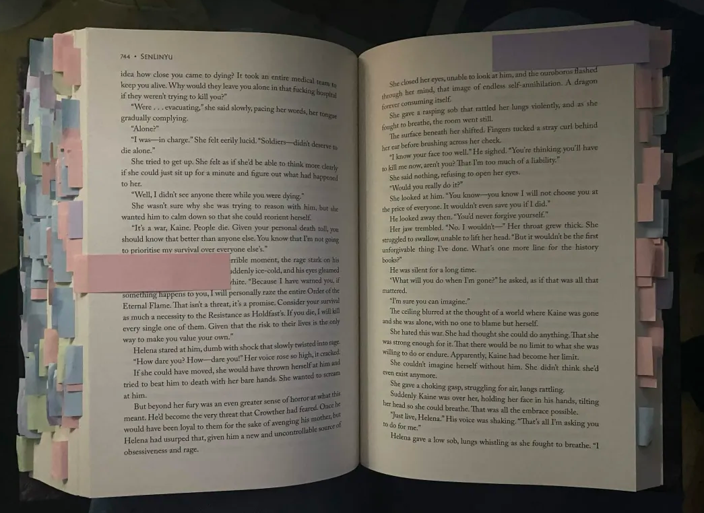

reading is my favorite thing to do ever and annotating adds even more to it!
pick a book to read (can be one you’ve read before or a completely new one) and decide what you’re going to annotate. i typically do quotes, favorite moments, and important things (for example, world descriptions if it is a fantasy book), but you can really do whatever you want! then read the book and tab the things as you go along. if you see a cool quote, tab it. if you come across a cute moment between characters, tab it. some people also like to highlight or underline as well as tabbing. overall, just do whatever you feel like doing! the goal is to read and make it a little more interesting!